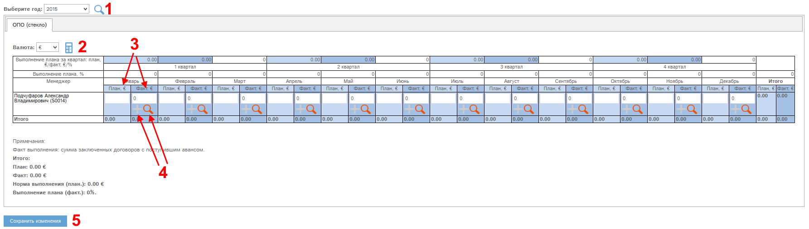

При наличии у Вас соответствующих прав Вам доступен раздел "План/факт продаж". По умолчанию, если Вы участвуете в плане/факте продаж, то указаны только Ваши данные.

Рис. План/факт продаж.
Если у Вас есть специальные права, то Вы имеете доступ к данным других отделов и сотрудников.
В разделе доступны следующие поля и кнопки:
Год плана/факта (1) - выберите интересущий год и нажмите кнопку для просмотра данных.
Валюта (2) - если Вас интересуют данные в другой валюте, то выберите эту валюту в фильтре и нажмите . Пересчет осуществляется по текущим курсам валют из справочника в разделе "Мои организации". Данные в этот справочник попадают автоматически ежедневно по данным ЦБ РФ.
Месячные значения плана/факта (3).
У некоторых отделов (ОПО камень, стекло, дерево) данные факта продаж формируются по данным раздела "Договоры и приложения" (4). С помощью кнопки "+" (при наличии прав) можно добавить новый договор, а с помощью кнопки - просмотреть договора, составляющие факт продаж по выбранному месяцу.
У остальных отделов - данные факта продаж вносятся прямым редактированием полей (3), как и плана продаж.
При наличии прав на редактирование поля (3) будут активны. Для сохранения внесенных изменений нажмите кнопку "Сохранить изменения" (5).